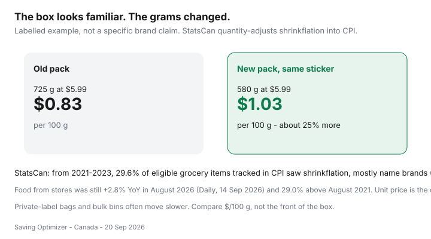

Food & Groceries · Canada
Shrinkflation at Canadian grocery stores: how to spot it and protect your unit price
The cereal still costs $5.99. The box looks the same from the aisle. The bag inside is 145 g lighter. That is shrinkflation: same sticker, fewer grams. It breaks mental price books that Canadians built before 2022, and it is why “I swear this used to last two weeks” is not nostalgia. It is arithmetic.
Statistics Canada quantity-adjusts these changes in the CPI so a smaller jar at the same price counts as a price increase. Your job at the shelf is simpler: read $/100 g, not the front of the pack. Food from stores was still +2.8% year over year in August 2026 and 29.0% above August 2021 (Daily, 14 Sep 2026). Shrinkflation is one reason the till still feels like 2022 even when the annual rate cooled.
Disclosure: There is no natural affiliate product in a unit-price habit. Saving Optimizer does not claim grocer or brand partnerships. This guide works with the shelf tag you can already see.
Key takeaways
- Always compare $/100 g or $/100 ml. The familiar box is not a unit.
- StatsCan (18 Feb 2025): 29.6% of eligible grocery items in the 2021–2023 CPI sample saw shrinkflation; 77.6% of cases were name brands; nearly half of instances were in 2022.
- Private label is a hedge, not a force field. Still weigh the bag.
- Switch formats (bag vs box, bulk vs branded) when the tag wins and you will finish the food.
- Do not invent search volumes. Households feel this because grams disappeared.
Common shrinkflation patterns on shelves
StatsCan’s food-specific quantity-adjustment note flagged margarine, pasta mixes, cookies and crackers, mozzarella, breakfast cereal, and cheddar among the products with the most instances in that 2021–2023 window. Fresh produce and most meats were largely outside that “eligible grocery item” note — those already move by the kilo.
What you see in a Canadian aisle: a peanut butter jar that sits lower in the same silhouette, a chip bag with more air, a yogurt tub that lost 50–100 g, toilet paper that is not groceries but trains the same eye. Look at net quantity, not the cartoon.

Always check $/100 g, not package claims
Canadian shelf-edge labels are supposed to show a unit price. When they do, believe the tag over “family size” or “same great taste.” When they do not — or when two packs use different units — divide. Price ÷ grams × 100. Compare that number across brands and sizes. This is the same habit as the overview in how to cut the grocery bill.
Loyalty prices lie twice. A member price on a shrunken pack can still lose to a regular-price larger store brand. Points do not restore missing grams.
Private label as a shrinkflation hedge
House brands were 22.4% of StatsCan’s 2021–2023 quantity-adjustment cases versus 77.6% name brand. That is a tilt, not immunity. No Name, Great Value, Selection, Compliments, and PC split the difference: often slower to shrink, sometimes just a smaller bag with a quieter label. Weigh them anyway.
Discounter shelves still beat full-service theatre — banner rotation.
When to switch formats (bag vs box)
| Old habit | Check this format | Win condition |
|---|---|---|
| Boxed cereal | Bagged oats or store-brand bag | $/100 g and you will eat breakfast |
| Branded cracker box | Larger bag or bakery-aisle plain crackers | Same job, fewer grams of marketing |
| Small yogurt cups | 1–2 kg tub | You finish it before the date |
| Name-brand pasta | 900 g–2 kg store bag | Same durum, quieter box |
| Tiny spice jars | Ethnic grocer bags | You cook with that spice monthly |
Costco club packs are a format switch with a membership attached. Only if the $/100 g wins and storage is real — cart split.
Reporting and community tracking (optional)
Photograph net quantity and the sticker if you want to contribute to a community thread. Useful; not required. There is no official “shrinkflation hotline” that refunds your cereal. Competition-policy headlines come and go. Your weekly defence is the tag.
Habit checklist for every shop
- Read $/100 g before the brand name.
- Confirm net grams on the pack you are holding — old muscle memory lies.
- Compare private label and a different format, not just the neighbouring flavour.
- Ignore “was/now” theatre on a smaller pack.
- Write three staples in a price book (oats, peanut butter, yogurt) so shrinks show up as a number.
Inflation context and ranked levers sit in grocery prices in 2026. This page is the grams.
Sources & date stamps
- Statistics Canada, “Shrinking products, rising prices” (11-627-M, 18 Feb 2025): 29.6% of eligible grocery items 2021–2023; 49.5% of instances in 2022; 77.6% name brand vs 22.4% house brand.
- Statistics Canada, food-price measurement in the CPI (quantity adjustment captures shrinkflation as a price increase).
- Statistics Canada Daily, 14 Sep 2026: food from stores +2.8% year over year in August 2026; 29.0% above August 2021.
Frequently asked questions
Does Statistics Canada count shrinkflation as inflation?
Yes. When a tracked pack gets smaller, the CPI applies a quantity adjustment so the unit-price increase is captured. From 2021–2023, 29.6% of eligible grocery items in the CPI sample experienced shrinkflation, and 77.6% of those cases were name brands (StatsCan infographic, 18 Feb 2025).
What should I look at instead of the shelf sticker?
The $/100 g or $/100 ml tag on the shelf edge, then the grams on the nutrition or net-quantity line. If the tag is missing, divide price by grams yourself.
Is private label immune?
No, but StatsCan found house brands were a minority of 2021–2023 quantity adjustments (22.4%). Still check the bag weight. Store-brand oats that shrank are still a shrink.
When should I switch from a box to a bag?
When $/100 g on the bag or bulk bin beats the familiar box after you account for waste. A cheap bag you do not finish is not a hedge.
Should I report shrinkflation somewhere?
Optional. Photograph the old and new net quantity if you like community tracking. Your household defence is still the unit-price habit, not a complaint form.